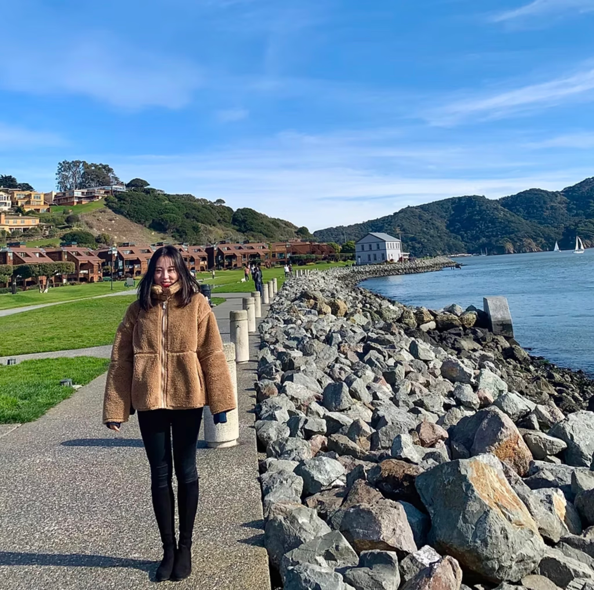

ROLE
Product Designer, 8+ yrs
Open to new roles
2026
A Product Designer shaping large-scale
platforms with a deep practice in design systems,
AI-powered experiences, and complex workflows.
A Senior Product Designer based in the San Francisco Bay Area, specializing in complex workflows, platform architecture, and AI-powered experiences.
The Journey Over the past 8+ years, my design career has been driven by a fascination with how humans interact with complex systems. My journey started at a major technology corporation, where I crafted interfaces for consumer electronics, followed by deeply agile roles in early-stage startups focused on the housing and gaming sectors.
Most recently, I have been tackling design at a federal government scale. I focus on modernizing massive legacy ecosystems, building robust design systems, and exploring AI-assisted workflows that serve millions of users.
I thrive in the space where ambiguity meets execution. For me, design isn't just about crafting sleek, contemporary interfaces; it's about acting as the strategic bridge between product and engineering. I partner closely with cross-functional teams to balance business metrics with technical feasibility, turning dense, systemic challenges into intuitive, future-proof digital realities.
